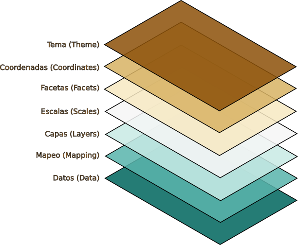
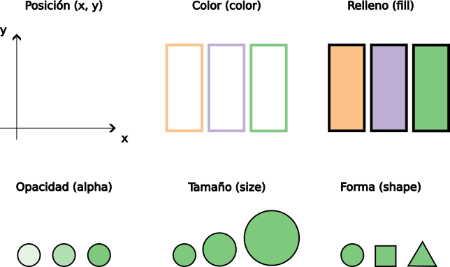
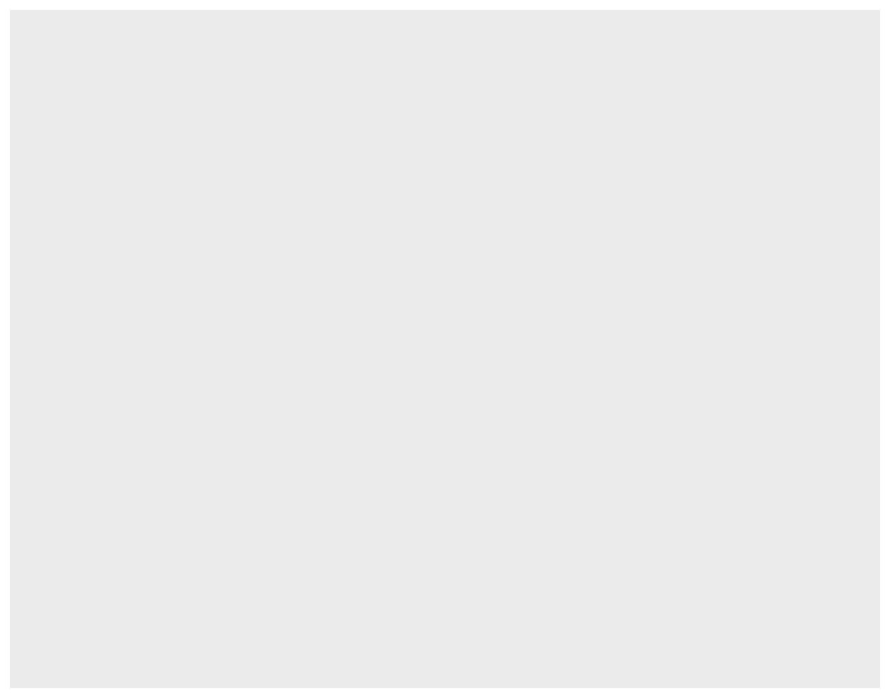
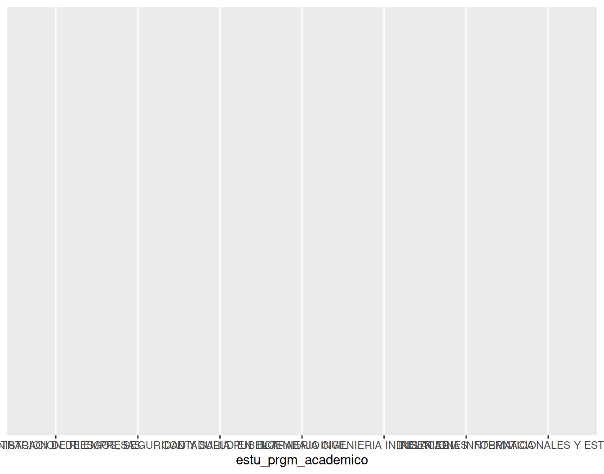
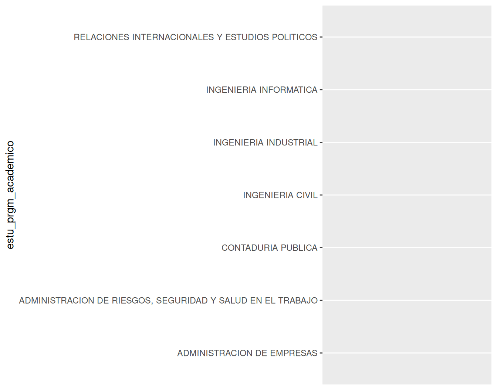
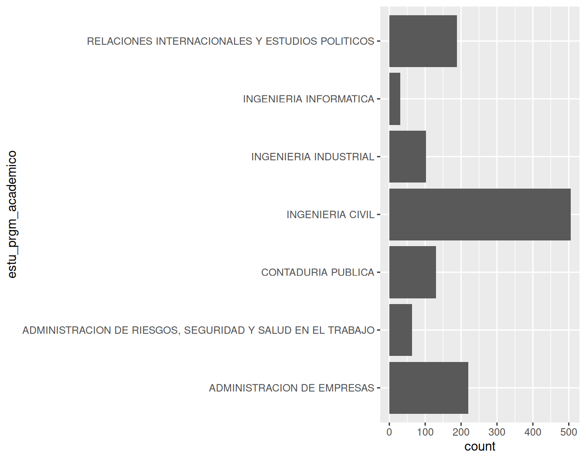
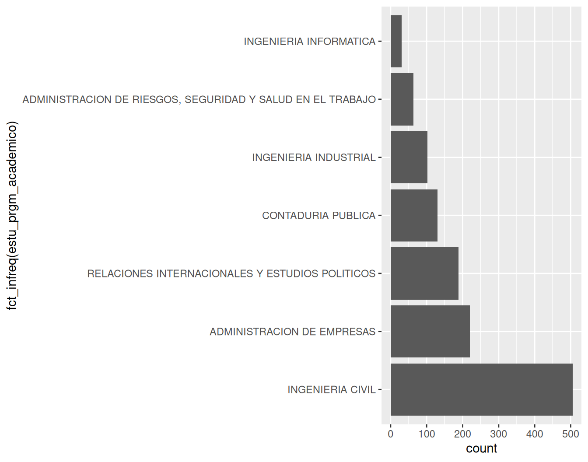
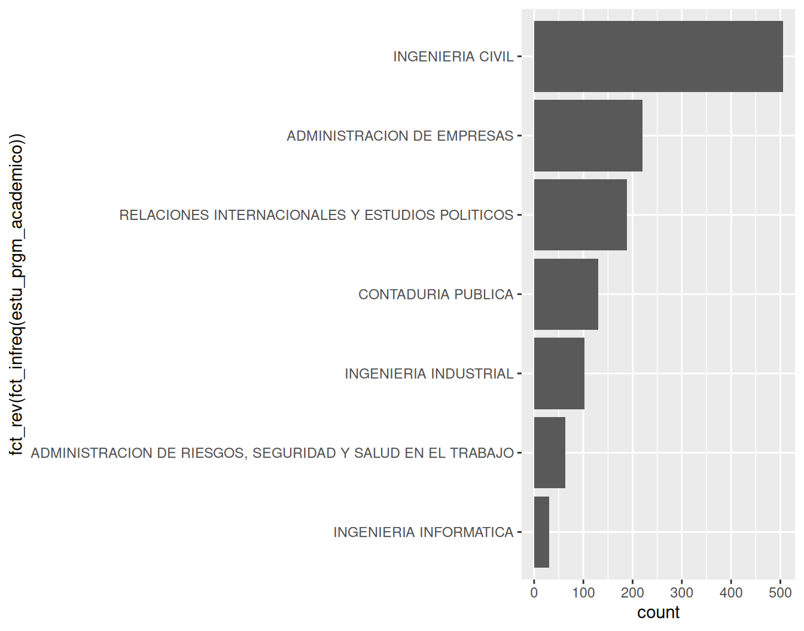
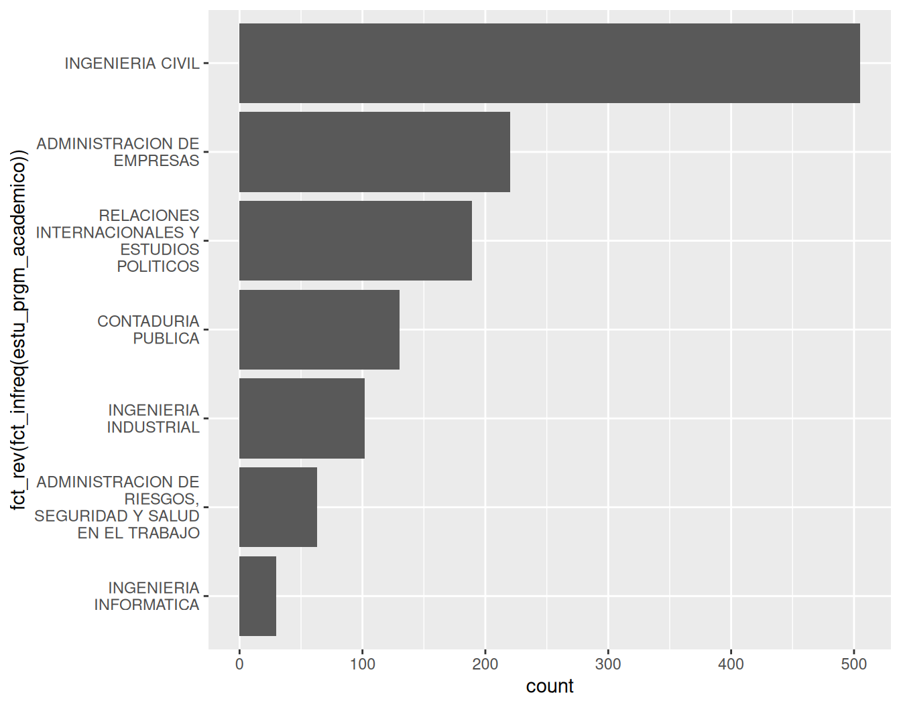
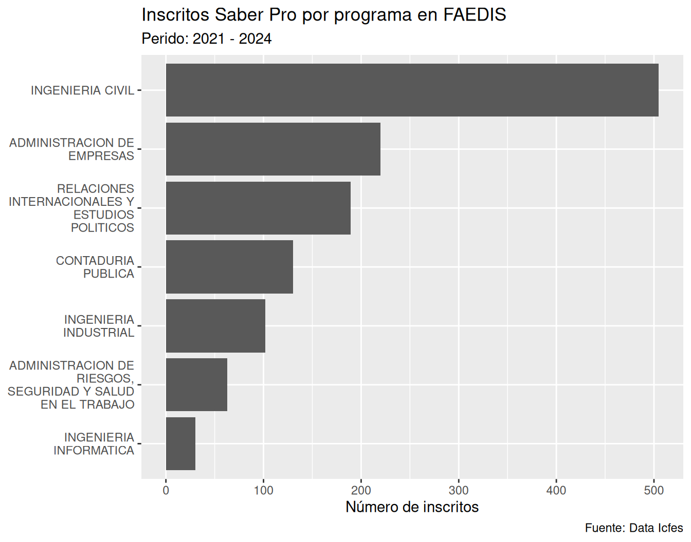

ggplot2
Este capítulo se basa en (Wickham, 2016) y (Wilke, 2019) así como en la documentación oficial de ggplot2 donde tiene como propósito introducir el modelo mental de la gramática de gráficos en capas (layered grammar of graphics, (Wickham, 2010)) para visualizar variables numéricas a través de un conjunto de categorías utilizando el paquete ggplot2 e información de los resultados del examen Saber Pro del grupo de competencias genéricas correspondientes a programas de pregrado de la Facultad de Estudios a Distancia (FAEDIS) de la Universidad Militar Nueva Granada (UMNG).
Exploraremos los siguientes aspectos:
Para desarrollar el contenido de este capítulo es necesario que descarges el archivo señalado a continuación:
Luego, genera una carpeta con el nombre data y dentro de esta carpeta incluye el archivo 2021-2024_saber-pro-genericas_faedis.rds. Finalmente, genera una carpeta con el nombre 006_visualizar-cantidades-en-r y dentro de la carpeta crea un archivo con el nombre 001_visualizar-cantidades-datos-faedis.R, siguiendo las indicaciones descritas en la Sección 4.4.
El paquete ggplot2, incluido en el tidyverse, permite generar visualizaciones a partir de un conjunto de datos. Este paquete utiliza un marco conceptual basado en la gramática de gráficos desarrollada en (Wilkinson & Wills, 2005). La gramática de gráficos en capas es una adaptación de esta gramática para integrarla en el lenguaje de programación de R.
A medida que explores diferentes formas de visualizar un conjunto de datos entenderás en más detalle la gramática de gráficos en capas utilizando el paquete ggplot2. Por ahora se describirán de manera general las 7 capas que conforman este modelo mental (ver Figura 6.1) y que se utilizan en ggplot2 como un conjunto de instrucciones para generar un gráfico.

Para que ggplot2 genere un gráfico requiere como mínimo los siguientes 3 componentes: Datos, Mapeo y Capas. Los demás elementos restantes (Escalas, Facetas, Coordenadas y Tema) cuentan con valores predeterminados que eliminan inicialmente la necesidad de fijar configuraciones adicionales.
Datos: es el insumo principal que se requiere para generar un gráfico donde se refiere al conjunto de datos que se busca visualizar. ggplot2 funciona mejor si el conjunto de datos es ordenado (tidy data en inglés, (Wickham, 2014)) donde este concepto se tratará en más detalle en el Capítulo 10.
Mapeo: es el conjunto de instrucciones que permiten mapear las variables de los datos a propiedades visuales denominadas atributos estéticos. En la Figura 6.2 se indican algunos ejemplos de atributos estéticos.

Capas: es el componente que toma los datos mapeados para transformarlos en una representación visual comprensible. Cada capa se compone de 3 elementos:
Una geometría que determina como se muestran los datos a través de atributos estéticos.
Una transformación estadística donde calcula nuevas variables a partir de los datos y afecta que parte de ellos se muestran.
Un ajuste de posición donde determina la ubicación en la que se presentará visualmente cada dato.
Una capa en ggplot2 se construye con funciones de la forma geom_*() o stat_*().
Escalas: es el componente que traduce la información visual del gráfico de vuelta a los datos originales, utilizando los ejes y las leyendas como guías.
En ggplot2 las escalas se aplican usualmente mediante funciones que utilizan el patrón scale_{aesthetic}_{type}(), donde {aesthetic} corresponde a uno de los atributos estéticos utilizados en el mapeo y {type} una etiqueta descriptiva asignada a la escala.
Sin embargo, existen también funciones auxiliares como labs() y lims()que permiten realizar ajustes a las etiquetas y los límites de un gráfico.
Facetas: es el componente que permite visualizar diferentes subconjuntos de datos en paneles individuales, dividiendo el gráfico principal en función de variables categóricas.
Coordenadas: es el componente que determina cómo se combinan los atributos estéticos x y y para posicionar los elementos en el plano del gráfico. Por defecto, se utiliza el sistema de coordenadas cartesianas, pero existen otras opciones dentro de ggplot2.
Tema: es el componente que se encarga de controlar cualquier elemento visual del gráfico que sea ajeno a los datos. Su función principal es determinar la apariencia estética y el estilo general del diseño del gráfico.
En esta sección realizarás un gráfico de barras señalando el número de inscritos al examen Saber Pro para cada programa de pregrado de la Facultad de Estudios a Distancia de la Universidad Militar en el periodo 2021-2024, tal como se indica en la Figura 6.3.
ggplot2
El primer componente de la gramática de gráficos en capas son los datos. En ese sentido explorarás el conjuntos de datos en 2021-2024_saber-pro-genericas_faedis.rds. Primero, debes cargar el paquete tidyverse utilizando el archivo 001_visualizar-cantidades-datos-faedis.R
# Cargar paquetes ----
library(tidyverse)De esa manera puedes importar los datos para explorarlos en R como se señala a continuación teniendo en cuenta lo indicado en la Nota 6.1.
# Importar datos ----
saber_pro_genericas_faedis_2021_2024 <- read_rds(
file = "data/2021-2024_saber-pro-genericas_faedis.rds"
)En el Capítulo 11 se abarcará con más detalle la importación de datos para archivos con una extensión .rds. Por ahora, el enfoque del Capítulo 6 será la visualización de un conjunto de datos.
Una vez importes el conjunto de datos, podrás darle un “vistazo” utilizando la functión glimpse() (ver Listado 4.5) para identificar el número y los tipos de variables que lo componen, así como la cantidad de observaciones disponibles.
# Inspeccionar datos ----
glimpse(saber_pro_genericas_faedis_2021_2024)Rows: 1,239
Columns: 20
$ ano <int> 2021, 2021, 2021, 2021…
$ estu_consecutivo <chr> "EK202120262469", "EK2…
$ estu_genero <fct> M, M, M, M, F, F, F, F…
$ estu_semestrecursa <ord> 09, 09, 09, 09, 09, 09…
$ fami_estratovivienda <ord> Estrato 3, Estrato 4, …
$ fami_educacionmadre <ord> Técnica o tecnológica …
$ fami_educacionpadre <fct> Secundaria (Bachillera…
$ estu_cod_depto_presentacion <chr> "11", "11", "11", "11"…
$ estu_depto_presentacion <chr> "BOGOTÁ", "BOGOTÁ", "B…
$ estu_cod_mcpio_presentacion <chr> "11001", "11001", "110…
$ estu_mcpio_presentacion <chr> "BOGOTÁ D.C.", "BOGOTÁ…
$ estu_snies_prgmacademico <int> 6527, 11428, 11428, 11…
$ estu_prgm_academico <chr> "ADMINISTRACION DE EMP…
$ mod_competen_ciudada_punt <dbl> 162, 190, 154, 179, 17…
$ mod_comuni_escrita_punt <dbl> 133, 174, 85, 157, 154…
$ mod_ingles_punt <dbl> 151, 155, 150, 144, 14…
$ mod_ingles_desem <fct> A2, A2, A2, A2, A2, A2…
$ mod_lectura_critica_punt <dbl> 114, 168, 139, 148, 18…
$ mod_razona_cuantitat_punt <dbl> 135, 164, 113, 149, 16…
$ punt_global <dbl> 139, 170, 128, 155, 16…Para examinar y en particular crear un gráfico a partir de un conjunto de datos es necesario entender a que se refieren cada una de las variables que lo componen. En ese sentido, a continuación se describen cada una de las variables en 2021-2024_saber-pro-genericas_faedis.rds:
ggplot()Para construir la Figura 6.3 se requiere en primera instancia inicializar un objeto ggplot. Para llevar a cabo este proceso se utiliza la función ggplot() y el parámetro data de esta función con el conjunto de datos que se busca visualizar, en este caso saber_pro_genericas_faedis_2021_2024:
ggplot
ggplot(data = saber_pro_genericas_faedis_2021_2024)
En este paso R no genera un gráfico, simplemente genera visualmente un “lienzo” completamente vacío. El propósito en el Listado 6.1 es almacenar los datos para que sean después utilizados por otros componentes.
Este componente tiene como propósito fijar un conjunto de instrucciones respecto a cómo los datos son asociados a los atributos estéticos. Para realizar el mapeo se utiliza la función aes() junto con el parámetro mapping dentro de la función ggplot(). Para ilustar este aspecto de manera concreta utilizaremos inicialmente la posición (ver Figura 6.2) asociando la coordenada x a la variable estu_prgm_academico, donde se encuentran los nombres de los programas académicos:
x
ggplot(
data = saber_pro_genericas_faedis_2021_2024,
mapping = aes(x = estu_prgm_academico)
)
En el Listado 6.2 se fija una posición para cada nombre de los programas académicos en la coordenada x. Debido a la longitud de los nombres y la forma como se muestran de manera horizontal, el gráfico generado es confuso. Para solucionar este aspecto es posible utilizar de manera alternativa la coordena y asociándola a la variable estu_prgm_academico:
y
ggplot(
data = saber_pro_genericas_faedis_2021_2024,
mapping = aes(y = estu_prgm_academico)
)
Para ilustrar el número de estudiantes inscritos por programa académico es posible utilizar la función geom_bar() donde a través de la longitud de un conjunto de barras y contando el número de casos para cada grupo se genera una representación gráfica de este aspecto. Para lograr lo descrito anteriormente agrega la capa geom_bar() utilizando el operador +, tal como se señala a continuación:
ggplot(
data = saber_pro_genericas_faedis_2021_2024,
mapping = aes(y = estu_prgm_academico)
) +
geom_bar()
En el Listado 6.4 los nombres de los programas académicos se ordenan internamente de manera alfabética y se representan al generar el gŕafico de esa forma en la coordenada y. Sin embargo, para facilitar la comunicación respecto al número de inscritos en relación a la variable estu_prgm_academico es importante ordenarla por el número de casos en cada grupo dentro del gráfico. Para ordenar estu_prgm_academico por el número de casos se puede utilizar la función fct_infreq():
fct_infreq() para ordenar datos categóricos de acuerdo al número de casos
ggplot(
data = saber_pro_genericas_faedis_2021_2024,
mapping = aes(y = fct_infreq(estu_prgm_academico))
) +
geom_bar()
La función fct_infreq() ordena una variable categórica por el número de casos en cada grupo empezando por el más grande y terminando por el más pequeño. En caso que se busque ordenar estu_prgm_academico de forma descendente desde arriba hacia abajo, se puede reversar el orden generado por la función fct_infreq() con la función fct_rev() utilizando como insumo el código del Listado 6.5:
fct_rev() para reversar el orden de datos categóricos previamente ordenados
ggplot(
data = saber_pro_genericas_faedis_2021_2024,
mapping = aes(y = fct_rev(fct_infreq(estu_prgm_academico)))
) +
geom_bar()
En el Listado 4.4 se señaló la forma de consultar la documentación de un conjunto de datos que pertenece a un paquete utilizando el símbolo ?. De la misma forma, es posible también realizar este proceso con una función. Si se examina la documentación de la función geom_bar() con ?geom_bar en la sección Usage es posible verificar que se encuentra el parámetro stat con el argumento "count", como stat = "count". Esta opción es la que permite que la función geom_bar() realice un conteo del número de casos dentro de la variable estu_prgm_academico para generar la representación gráfica mediante la longitud de un conjunto de barras utilizando el código en el Listado 6.6.
Al igual que en la Sección 6.2.3.2 si examinas la documentación de la función geom_bar() en la sección Usage se puede también encontrar el parámetro position con el argumento "stack", como position = "stack". En el Capítulo 7 se explorará, con otra tipo de geometría, cómo se puede utilizar este ajuste de posición para agregar información adicional dentro de un gráfico. Por ahora, en el Capítulo 6 no se profundizará respecto al uso de ajustes de posición.
Este componente permite interpretar lo que se muestra en el gráfico a partir de etiquetas y leyendas. En el gráfico generado en el Listado 6.6 las etiquetas correspondientes a los nombres de los programas en la coordenada y tienen una longitud demasiado extensa donde abarcan la mayor área del gráfico, opacando la información que se busca resaltar respecto al número de inscritos por programa. Para corregir este aspecto, se puede utilizar la función scale_y_discrete() utilizando el parámetro labels y la función auxiliar label_wrap_gen() con el propósito de limitar el ancho de los nombres de los programas que se señalan en el gráfico. Utilizando de nuevo el operador +, como en el Listado 6.4, puedes agregar este componente de la siguiente manera:
y
ggplot(
data = saber_pro_genericas_faedis_2021_2024,
mapping = aes(y = fct_rev(fct_infreq(estu_prgm_academico)))
) +
geom_bar() +
scale_y_discrete(labels = label_wrap_gen(width = 18))
De esa manera, se puede limitar con el parámetro width y el argumento 18 la longitud de las etiquetas en la coordenada y a un máximo de \(18\) caracteres, utilizando la función label_wrap_gen() dentro de scale_y_discrete().
Adicionalmente, se pueden eliminar o modificar diferentes etiquetas en el gráfico para incluir información de contexto de tal manera que sea más comprensible. Para modificar estos elementos en el paquete ggplot2 se utiliza la función labs() haciendo uso nuevamente del operador +.
Utilizando esta función se puede agregar un título, un subtítulo y una nota al pie así como señalar una descripción más adecuada en la etiqueta de la coordenada x y eliminar la etiqueta de la coordenada y, debido a que el nombre de los programas es lo suficiente claro para determinar a que se refiere esta información:
labs() para agregar, modificar o eliminar etiquetas en un gráfico
ggplot(
data = saber_pro_genericas_faedis_2021_2024,
mapping = aes(y = fct_rev(fct_infreq(estu_prgm_academico)))
) +
geom_bar() +
scale_y_discrete(labels = label_wrap_gen(width = 18)) +
labs(
x = "Número de inscritos",
y = NULL,
title = "Inscritos Saber Pro por programa en FAEDIS",
subtitle = "Perido: 2021 - 2024",
caption = "Fuente: Data Icfes"
)
En el Listado 6.8 se utilizan diferentes parámetros de la función labs() con unos argumentos para modificar las etiquetas de la siguiente manera:
x = "Número de inscritos": permite modificar la etiqueta de la coordenada x para entender los valores que se presentany = NULL: permite eliminar la etiqueta de la coordenada y, utilizando NULL para señalar la ausencia de este elementotitle = "Inscritos Saber Pro por programa en FAEDIS": permite señalar el título que acompaña la gráfica indicando un texto que describe el fenómeno que se busca representarsubtitle = "Perido: 2021-2024": permite señalar un subtítulo donde en este caso se indica el periodo al que se refieren los datoscaption = "Fuente: Data Icfes": permite señalar una nota al pie indicando la fuente de donde se obtuvieron los datosDIVIPOLA es el acrónimo de División Político Administrativa de Colombia donde es una nomenclatura estandarizada, diseñada por el Departamento Administrativo Nacional de Estadística (DANE) para la identificación de Entidades Territoriales (departamentos, distritos y municipios), Áreas No Municipalizadas y Centros Poblados.↩︎
SNIES es el acrónimo de Sistema Nacional de Información de la Educación Superior donde el Ministerio de Educación de Colombia asígna un número de registro único a un programa académico para identificarlo (ver también Sección 5.4).↩︎